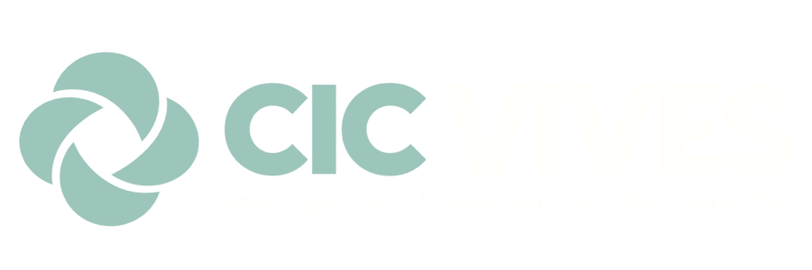

Ciencia, datos y talento para los retos de la Tierra y del espacio
Somos una asociación civil con sede en La Paz. Unimos observación espacial, cómputo, sensores y comunidades para investigar, conservar y restaurar el territorio sudcaliforniano, con proyectos medibles, documentados y transferibles.
CIC VIVES · Plan de trabajo 2026 · Fondo: estación de San Gabriel, Isla Espíritu Santo, imagen histórica coloreada.
Observar desde arriba
Observación de la Tierra, CanSat, drones y formación aeroespacial práctica para leer el territorio a escala.
Cuidar lo que sostiene
Costas, islas y campos pesqueros: el lugar donde nació la ciencia aplicada en Sudcalifornia.
Medir en sitio
Sensores, energía, agua y datos con procedencia para comunidades y sistemas aislados.
Todo lo que hacemos, en un mapa
Cada sección tiene su propia página. Empieza por donde te interese.
Centro
Propósito, visión, objeto social y el plan de los próximos 90 días.
Identidad y plan → 02Programas
Espacio, datos, sistemas aislados y salud: cuatro programas, un mismo método.
Ver programas → 03Pilotos
Seis pilotos acotados, líneas demostrativas y la Red LoRa Peninsular en proyecto.
Ver pilotos → 04Datos
Vista previa del tablero de continuidad de energía y agua, con ficha de calidad.
Laboratorio de datos → 05Valores
El decálogo de San Gabriel: diez lecciones que guían nuestro trabajo.
Nuestros valores → 06Inspiración
Gastón J. Vives, su método y lo que nos enseña para los retos de hoy.
Fuente de inspiración → 07Colaborar
Diez formas de trabajar con el Centro y un canal directo de contacto.
Colaborar → →¿Tienes un reto?
Escríbenos y respondemos con una ficha breve y un siguiente paso concreto.
Contacto →Cuatro programas, un mismo método
Observar el entorno, inventar tecnología pertinente, probar en condiciones reales y compartir el conocimiento.
Espacio y tecnologías emergentes
CanSat, drones, observación de la Tierra y laboratorio de prototipado.
02Datos, análisis y visualización
Del sensor al tablero, con procedencia y receta reproducible.
03Sistemas y comunidades aisladas
Energía, agua, refrigeración y conectividad con operación local.
04Salud pública y bienestar
Acceso, prevención y continuidad de servicios comunitarios.
Primeros pilotos
Cada programa arranca con un piloto acotado, con sitio candidato, operador y criterios de aceptación claros.
Cada quien aporta lo que sabe hacer
Comunidades, universidades, empresas y gobiernos: buscamos alianzas por función, con evidencia y rendición de cuentas.